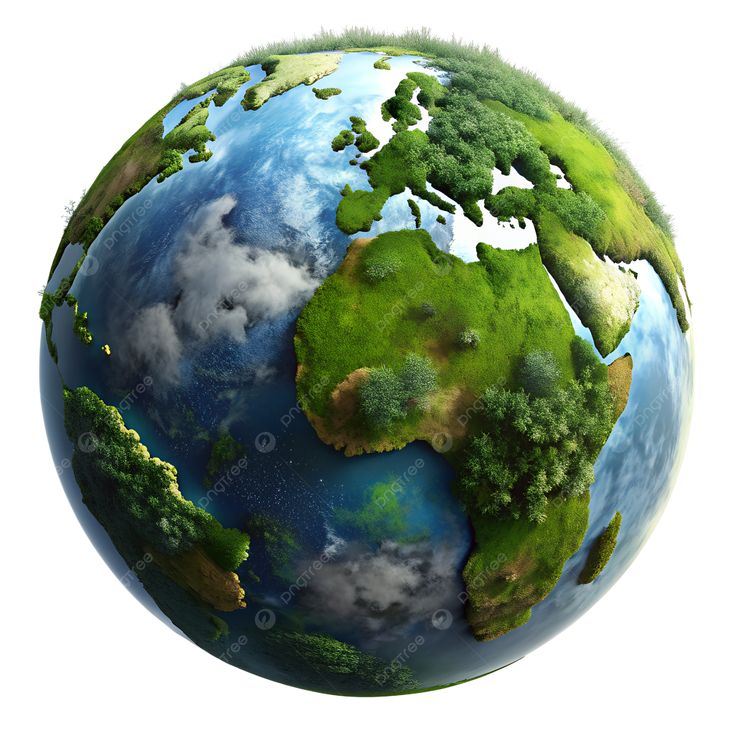

Measure your daily impact and start building a greener future with GreenWallet.
32kg
Trees Equivalent
1.4
GreenWallet helps individuals measure and reduce their carbon footprint through simple tracking tools and personalized insights. Every action counts — turn awareness into real-world change. We combine smart technology with environmental responsibility so you can track, analyze, and reduce your carbon emissions effortlessly while earning insights that inspire sustainable living.
Enter transport, food, and energy details.
Our system calculates your CO₂ impact instantly.
Get tips, earn green points, and grow your forest.
Trees Saved
Carbon Reduction Goal
Users Tracking Daily